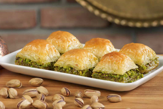

| Fiyat listesi |
|---|
| FISTIKLI PORSİYON :220tl |
| CEVİZLİ PORSİYON:200tl |
| FISTIKLI KÜÇÜK PORSİYON :120tl |
| CEVİZLİ KÜÇÜK PORSİYON:100TL |
| MARAŞ DONDURMASI:45TL |
Türkiye'de, Gaziantep baklavasıyla tanınan şehirdir. İçerisinde kullanılan malzeme, Gaziantep baklavasında antep fıstığı olsa da, bu coğrafi olarak büyük farklılıklar gösterir. Evde yapılan baklavalarda, Güneydoğu Anadolu'da antep fıstığı, Karadeniz'de fındık, İç Anadolu'da ceviz, Kıyı Ege'de badem, Edirne ve Trakya'da ise susam kullanılır. Genelde arananı antep fıstıklı tipi olsa da ekonomik nedenlerle sık sık cevizlisine de rastlanır. Yalın servis edilebileceği gibi, sade dondurma veya kaymakla da servis edilebilir.
